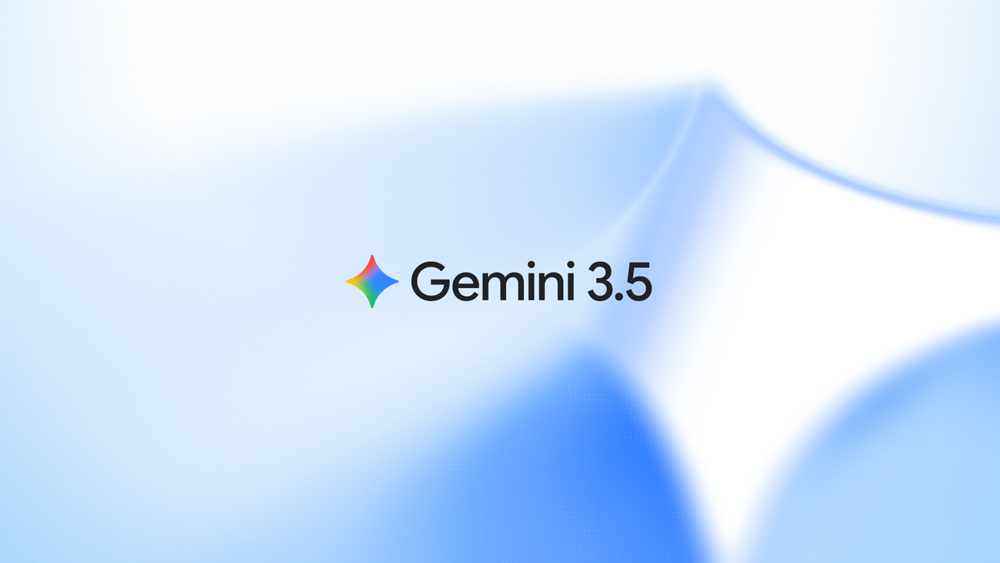

Introducing computer use in Gemini 3.5 Flash
Google DeepMind built 'computer use' directly into Gemini 3.5 Flash, letting developers spin up agents that navigate browsers and apps on a user's behalf. The move pushes the model beyond text into hands-on task execution, intensifying the race to make everyday software operable by AI.
deepmind.google · 2026-06-24